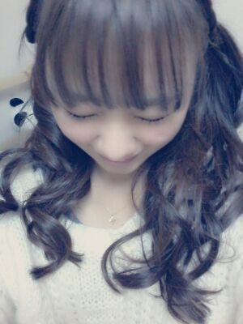

ぽっぽぉ〜い (*^^*)
最近、目の前で
電車のドアがゆっくり閉まって
ガラス越しの人に笑って
ごまかしてみた
Rottyだよ〜ん ♪
wow ))
素っぴんみたい ( */▽`\)
キャッ♪
新成人の皆ちゃま
本当におめでとぅござぃます♪
昨日は どんな１日を
過ごせたかな？
気になる気になる...(・∇・)モジモジ
んだんだ ,驚いたんだよ。
質問思った以上に
皆様から集まったお〜(*^^*)
大好きぃ〜
ありがとねぇ〜ん (*・ε・*)てへ。
ろってぃ-の
しちゅもん返し
いっきまぁーす *^^*
★受験生に今大事なことって何ですか?
えいとぉ〜 まひろは何を大事に
博多はまだ観光したことないやぁ〜(*^^*)
まひろ釣れるかなぁ〜〃▽〃?
もしスポーツして生きて行こうぜ!
めちゃ言われますね 笑
好きーっ(*/'ω'*)/
厳しくわないしゲラとなったら
本かぁ〜 ファッション好きだから
してないんです。
せっちゃんとかなりの仲です(*^^*)
イースト・シェル
全然手ふりますよっ(・▽・)ノシ
今年はどうゆう方針で何をしてゆくかとか
大丈夫だったよん*^^*
こんなに連絡してるってことは
せっちゃんと連絡をとってることが
かけてないよぉー☆ミ
無地
のエメラルドグリーンのカバーに
数学が好きで ホイホイ解いてたけど
明日も続き更新しちゃう...
ゾッ (〃θ〃)
ばいばいん♪のし

Rotty,